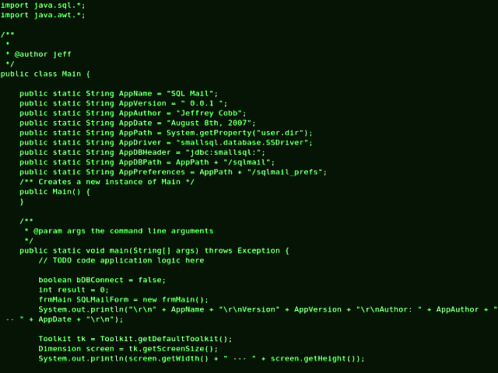

Learning Programming: From
Struggle to Finding What Works

Learning programming hasn’t always been easy for me. As an Informatics student, I often felt overwhelmed by how much there is to
learn—different languages, complex concepts, and the pressure to understand everything quickly. There were moments when I felt
stuck, especially when my code didn’t work and I didn’t know why. It made me realize that learning programming is not just about
intelligence, but also about the right approach.
After going through those struggles, I started looking for better ways to learn. From various sources and my own experience, I
discovered that focusing on understanding concepts is much more effective than memorizing syntax. Once I began to understand the logic
behind things like conditions and loops, coding started to make more sense.
I also learned that consistency matters more than long study sessions. Instead of forcing myself to study for hours, I try to spend a
little time coding every day. Even 30 minutes can make a difference. Along with that, I stopped relying only on tutorials and started
building small projects. It wasn’t always perfect, but it helped me understand how things actually work.
Another thing that really helped me is breaking problems into smaller steps. When I face a difficult task, I try to solve it piece by piece
instead of thinking about the whole problem at once. I’ve also learned to be more patient with errors. Debugging used to frustrate me, but now
I see it as part of the learning process.
I realized that using too many learning resources was slowing me down, so I started focusing on just one or two. I also try to review
what I’ve learned so I don’t forget it easily. To build a habit, I set a simple routine and sometimes use the “2-minute rule”—starting
small when I don’t feel motivated.
This journey is still ongoing, and I know I still have a lot to learn. But now I understand that progress doesn’t have to be fast. What
matters is staying consistent and not giving up. Step by step, I’m learning to grow in my own way.
← Kembali ke Blog
|